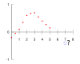

extrapolation

Definition: In mathematics, extrapolation is a type of estimation, beyond the original observation range, of the value of a variable on the basis of its relationship with another variable. It is similar to interpolation, which produces estimates between known observations, but extrapolation is subject to greater uncertainty and a higher risk of producing meaningless results. Extrapolation may also mean extension of a method, assuming similar methods will be applicable. Extrapolation may also apply to human experience to project, extend, or expand known experience into an area not known or previously experienced so as to arrive at a (usually conjectural) knowledge of the unknown (e.g. a driver extrapolates road conditions beyond his sight while driving). The extrapolation method can be applied in the interior reconstruction problem.
Source: Wikipedia
Wikipedia Page (Something wrong with this association? Let us know.)
Wikidata Page (Something wrong with this association? Let us know.)